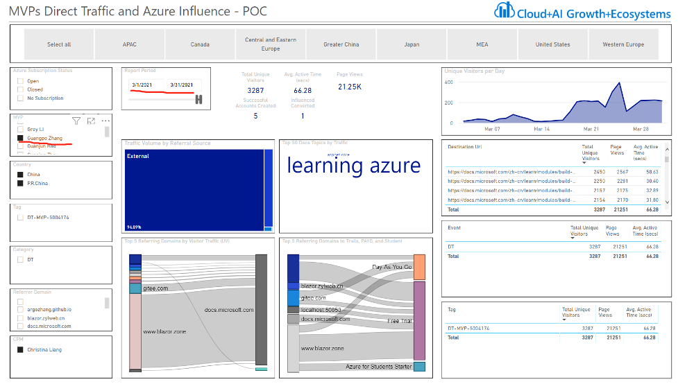
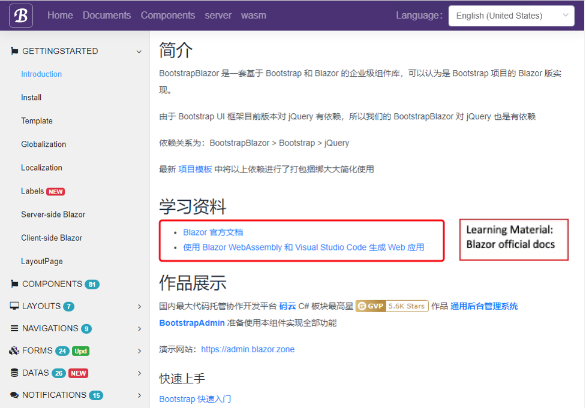
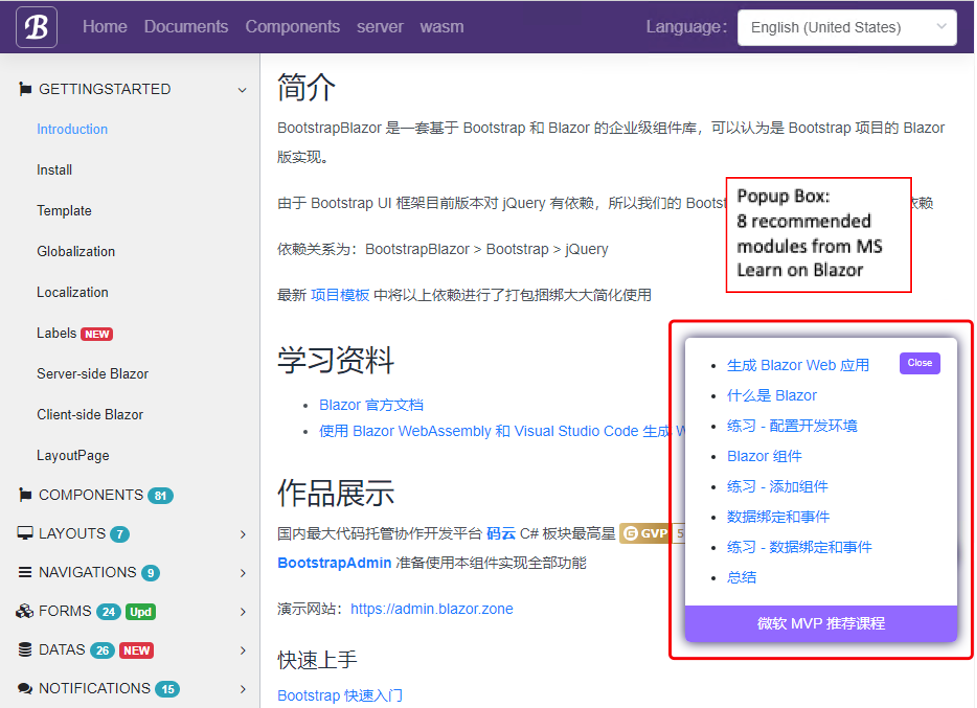
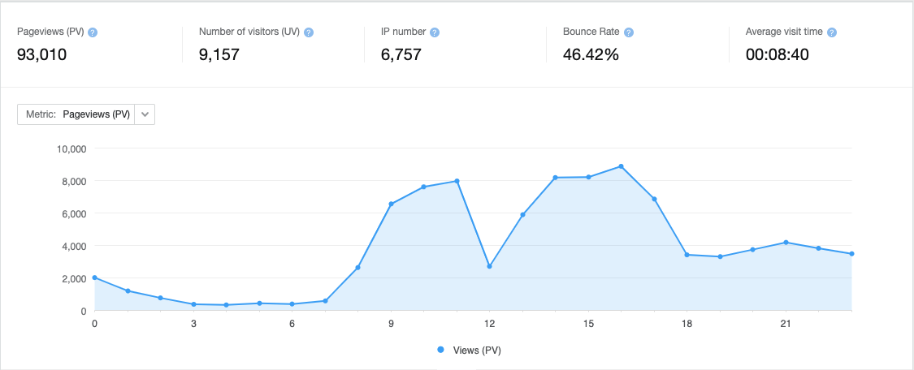
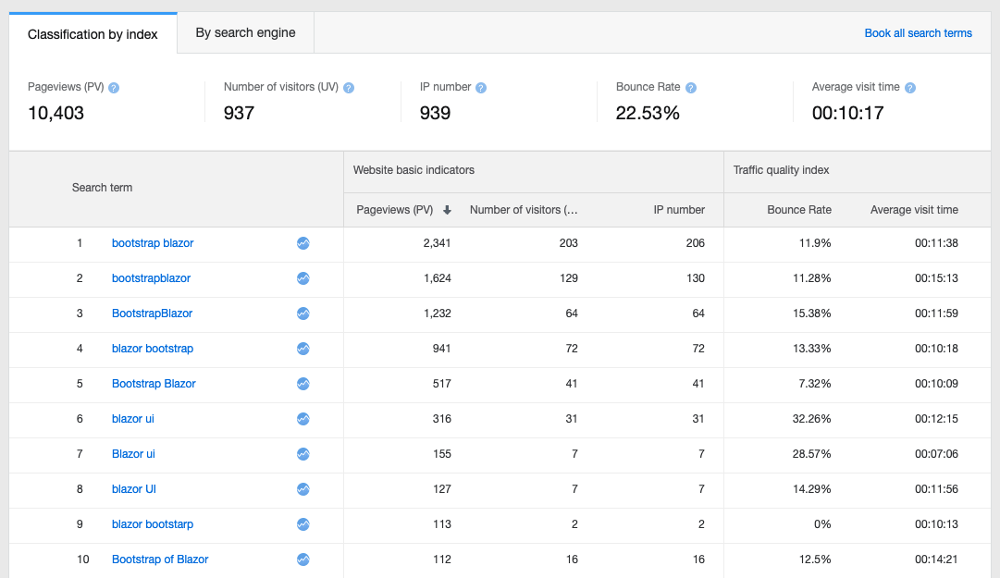
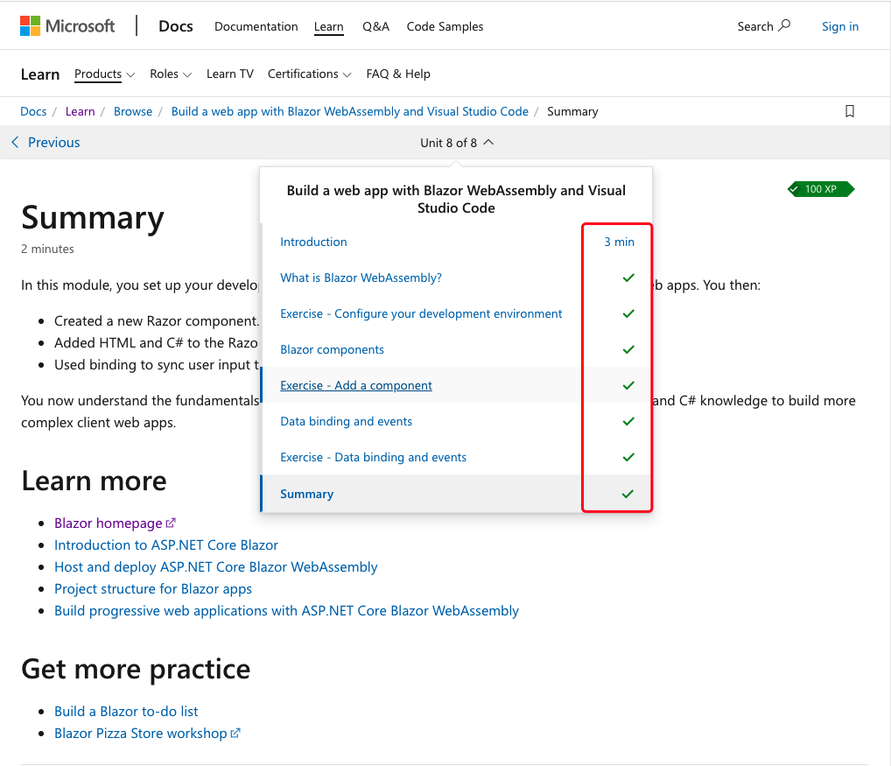

Docs & Learn Champion Best Practice Story
I am honored to be awarded as Microsoft MVP on March 1st, 2021. Being MVP has always been my dream for a senior developer who has kept active in technical communities about 20 years.
As soon as I joined the program, my CPM Christina Liang contacted with me immediately and arranged the onboarding meeting to introduce MVP Program and Docs & Learn Champion project. I thought Docs & Learn Champion was a fantastic project, which can help more people know MS Learn free learning platform, where they can find a systemtic knowledge and tool resource, so I registered this activity at once. Before I received my Creator ID, I have chose a dozen of Docs articles, vedios and learning modules from MS Docs and Learn website, prepared the original URLs to add my Creator ID later. Christina said I was as active and energetic as the generation of post 90s. Haha, it is my habit to take action fast. As a startup partner, I am very busy at work, so I treasure every minute in part time to build several personal technical websites, organize community learning groups and record learning videos, so when I think one thing is worth doing, I will take action fast to make it true, and more people can benefit from it soon.
I was also astonished when Christina told me my score during March, with 3,287 total unique and 21,250 page views. Seeing so many visitors are interested in MS Learn content, I have momentum to contribute more on this thing. Maybe it is just because of my sharing, someone know Blazor and MS product and services, and will make use of it in their daily work and get achievement in the future. That’s what make us feel proud as a Microsoft MVP.
Let me share my experience how I can attract 3,000+ visitors to see MS Docs and Learn website during one month.
Firstly
I add Docs links of Blazor official learning content at outsanding position on my persoanl website: www.blazor.zone, and I also made a popup box to introduce 8 important articles on Blazor, which beginner shall read them to have a general concept. Here is a small trick that I set up the popup box to cover some website content, most people would like to click them to have a look out of curiosity. Frankly speaking, they are very good learning content, and I highly recommend people to read them in my learning groups. The dashboard data says these 8 articles have got largest clicks, with each one over 3,200 views.
 Secondly
I made two large-scale updates and advertisement for my website in March, which attracted new visitors that took 71.94% of all visitors and attributed high clicks on my website. As shown in the screenshot below, you can see the visitors of my website in March was about 10,000 making 93,010 page views, so my Docs & Learn Champion unique visitors and page views are divided by my website data, we could find the transfer rates were 35.90% and 22.8% separately for unique visitors and page views. High percentage of my website visitors are interested in MS Learn content.

Thirdly
I made search engine optimization for some key words to get a satisfied result. Now, if people search words, such as blazor bootstrap ui in Chinese famous search engine – Baidu.com, they will be led to my website, and then have great probabilities to click MS Learn links I inserted there.
Fourthly
I organized Blazor community, and a number of learning groups. I would send MS Learn and Docs articles and modules into these community groups as learning material or answers to their questions. My hardworking administrators will also help me send these articles to group members. We are happy to receive members’ feedback that they felt the material is valuable and many of them sent screenshot to me showing they finished all modules.
Fifthly
I have several open-source projects, which will be updated every Thursday. I will send MS Learn content together with my open-source update news to the audience to share the popularity of update news, which usually attract over 2,000 views till next morning.
Sixthly
Taking a ride from official release. When .Net releases the preview version, people all actively discuss the new features, so I will post some blogs in the topic of these new features inserting MS Learn article links. For example, Microsoft recently released .Net preview 3 with hot reload feature, so I also post some blogs introducing blazor support hot reload and MS Learn courses.
All in all, as a newcomer, there are a lot of things to be learned from experienced MVPs and CPMs. I hope my sharing can provide you with some reference. Through joining Docs & Learn Champion, I am excited to see so many developers are interested in Microsoft products and services, as well as this fantastic free MS Learn platform. It is a continuously updated storehouse of practical knowledge, and I hope more people would know it, use it and connect with each other to progress through my sharing.